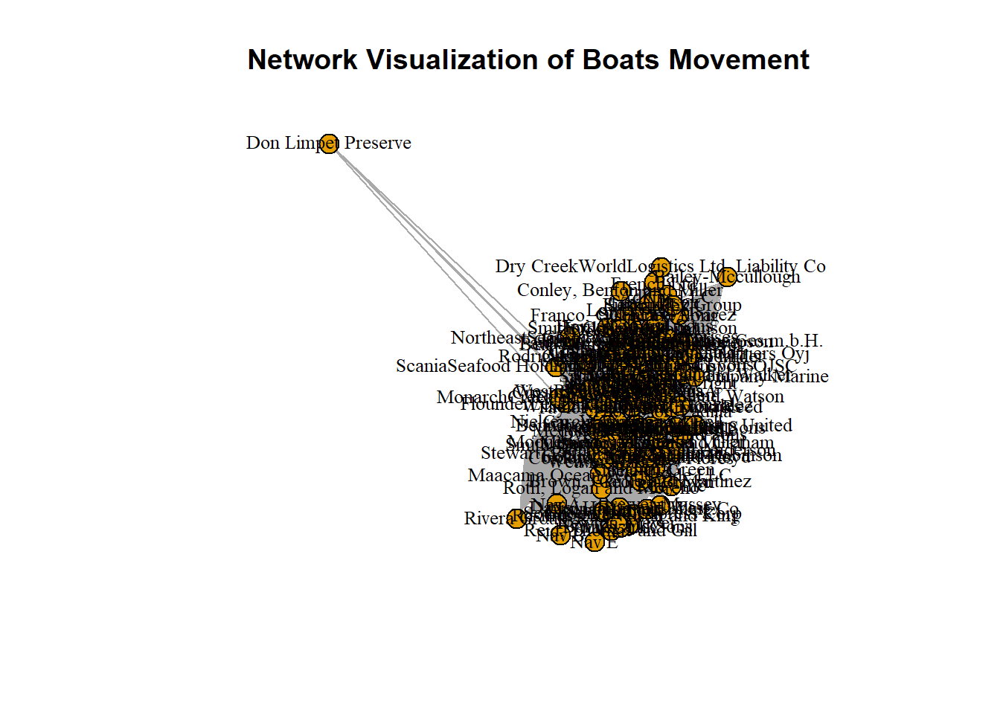
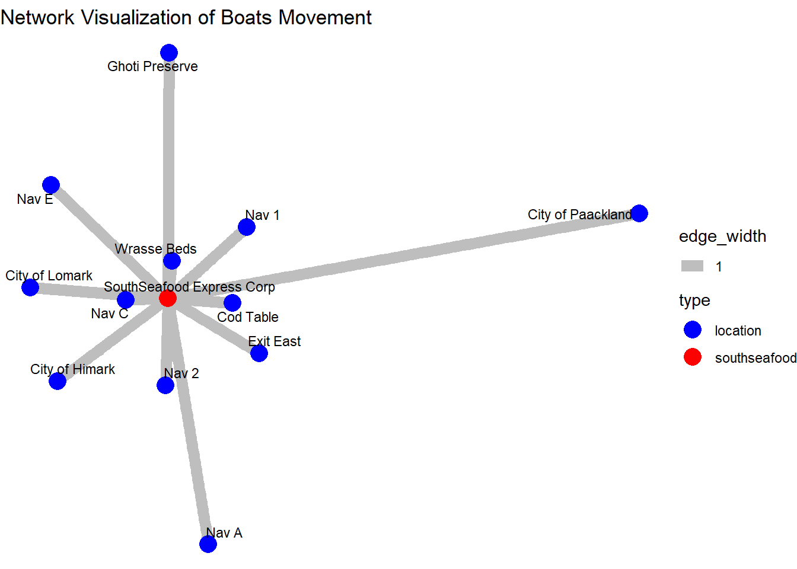

Code
pacman::p_load(jsonlite,tidyverse,igraph,ggraph)Thet Myat Noe
May 14, 2024
May 20, 2024
In Oceanus, island life is defined by the coming and going of seafaring vessels, many of which are operated by commercial fishing companies. Typically, the movement of ships and goods are a sign of Oceanus’s healthy economy, especially in the fishing business. But mundane routines can be disrupted by a major event. Analysts at FishEye International, a non-profit organization that aims to find and prevent illegal fishing, need help to better understand one such event.
FishEye has learned that SouthSeafood Express Corp has been caught fishing illegally. The scandal caused a major disruption in the close-knit fishing community. FishEye has been collecting data on ship movements and shipping records in hopes that they could assemble a cohesive store of knowledge that will allow them to better understand local commercial fishing behavior. FishEye processed open-source and commercial vessel tracking and shipping records into CatchNet: the Oceanus Knowledge Graph. Analysts examine and correct data as it is loaded but need help to create analytical capabilities for this data.
This exercise aims to help FishEye, a non-profit organization that focuses on illegal fishing, to better identify bias, track behavior changes, and infer temporal patterns from the knowledge graphs prepared by their data analysts.
The code chunk below uses p_load() function from pacman package to check if packages listed are already installed in the computer. The packages are loaded if they are found to be installed. If they are not installed, the function will proceed to install and load them into R environment.
#assigning to mc2_edges2
mc2_edges <- as_tibble(mc2_data$links)
# Breaking into subsets based on event category
E_TransponderPing <- subset(mc2_edges, mc2_edges$type == "Event.TransportEvent.TransponderPing")
E_HarborRpt <- subset(mc2_edges, mc2_edges$type == "Event.HarborReport")
E_Tx <- subset(mc2_edges, mc2_edges$type == "Event.Transaction")
# Dropping columns that are NULL - check if code drops where data is 1 null or all null
E_Tx_c <- E_Tx %>%
select_if(~ !any(is.na(.)))
E_Tping_c <- E_TransponderPing %>%
select_if(~ !any(is.na(.)))
# Exclude dropping of null for Habor report due to last 3 columns
#E_Hbrpt_c <- E_HarborRpt %>%
# select_if(~ !any(is.na(.)))# Segmenting nodes data
mc2_nodes <- as_tibble(mc2_data$nodes)
# Creating subset on nodes information
N_fish <- subset(mc2_nodes, mc2_nodes$type == "Entity.Commodity.Fish") %>%
select_if(~ !any(is.na(.))) %>%
select(-c(`type`, `_raw_source`, `_algorithm`, `Activities`, `fish_species_present`)) %>%
rename(fish_species = name,
fish_id = id)
NL_City <- subset(mc2_nodes, mc2_nodes$type == "Entity.Location.City") %>%
select_if(~ !any(is.na(.))) %>%
select(-c(`_raw_source`, `_algorithm`, `type`, `fish_species_present`)) %>%
rename(city_name = Name,
city_id = id)
NL_Point <- subset(mc2_nodes, mc2_nodes$type == "Entity.Location.Point") %>%
select_if(~ !any(is.na(.))) %>%
select(-c(`_raw_source`, `_algorithm`, `kind`, `fish_species_present`)) %>%
rename(point_name = Name,
point_id = id)
## Need to tidy NL Region
NL_Region <- subset(mc2_nodes, mc2_nodes$type == "Entity.Location.Region") %>%
select_if(~ !any(is.na(.))) %>%
select(-c(`_raw_source`, `_algorithm`, `type`, `Description`)) %>%
rename(region_name = Name,
region_id = id,
region_kind = kind)
N_Delivery_doc <- subset(mc2_nodes, mc2_nodes$type == "Entity.Document.DeliveryReport") %>%
select_if(~ !any(is.na(.))) %>%
rename(deliver_date = date,
cargo_id = id) %>%
select(-c(`_algorithm`, `type`, `_raw_source`, `Activities`, `fish_species_present`))
N_vessel <- mc2_nodes %>%
filter(grepl("Entity.Vessel", type)) %>%
mutate(vessel_type = case_when(
grepl("FishingVessel", type, ignore.case = TRUE) ~ "Fishing",
grepl("Ferry.Passenger", type, ignore.case = TRUE) ~ "Ferry_Passenger",
grepl("Ferry.Cargo", type, ignore.case = TRUE) ~ "Ferry_Cargo",
grepl("Research", type, ignore.case = TRUE) ~ "Research",
grepl("Other", type, ignore.case = TRUE) ~ "Other",
grepl("Tour", type, ignore.case = TRUE) ~ "Tour",
grepl("CargoVessel", type, ignore.case = TRUE) ~ "Cargo_Vessel"
)) %>%
select(-c(`_algorithm`, `type`, `_raw_source`, `Activities`, `fish_species_present`)) %>%
mutate(company = ifelse(is.na(company), "Unknown", company)) %>% # Handle NA values by replacing NA with unknown
rename(vessel_id = id,
vessel_name = Name,
vessel_company = company) %>%
select_if(~ !any(is.na(.)))Transponder ping data can provide the locations the vessels from shipping company has been to and give insight whether vessels have visited non-fishing areas. In this section, we will focus only on fishing vessels to understand fishing activities.
Plot a network graph showing all the shipping vessel movements by different companies
# Join data tables to include vessel_type, vessel_company in transponder ping data and filter only Fishing vessel type
E_Tping_c_Fishing <- E_Tping_c %>%
left_join(N_vessel %>% select(vessel_id, vessel_type, vessel_company), by = "vessel_id") %>%
filter(vessel_type == "Fishing")
edges <- data.frame(
from = E_Tping_c_Fishing$vessel_company,
to = E_Tping_c_Fishing$source
)
# Create a graph object
graph <- graph_from_data_frame(edges, directed = FALSE)
# Plot the network
plot(graph, vertex.size=10, vertex.label.cex=0.8, vertex.label.color="black",
main="Network Visualization of Vessel Movement")
Zoom into SouthSeafood Express Corp’s vessel movement to uncover any suspicious behaviour.
# Filter SouthSeafood Express Corp Vessels Only
E_Tping_c_Fishing_SS <- E_Tping_c_Fishing %>%
filter(vessel_company == "SouthSeafood Express Corp")
edges_ss <- data.frame(
from = E_Tping_c_Fishing_SS$vessel_company,
to = E_Tping_c_Fishing_SS$source
)
# Create a graph object
graph_ss <- graph_from_data_frame(edges_ss, directed = FALSE)
# Create a vertex attribute to distinguish between boats, SouthSeafood, and other companies
V(graph_ss)$type <- ifelse(V(graph_ss)$name == "SouthSeafood Express Corp", "southseafood",
ifelse(V(graph)$name %in% E_Tping_c_Fishing_SS$vessel_id, "boat", "location"))
# Plot the network with ggraph
ggraph(graph_ss, layout = 'fr') + # 'fr' layout (Fruchterman-Reingold) to spread nodes nicely
geom_edge_link(aes(width = 1), edge_colour = "grey") + # Add edges with grey color
geom_node_point(aes(color = type), size = 5) + # Add nodes with different colors based on type
geom_node_text(aes(label = name), repel = TRUE, size = 3, color = "black") + # Add labels with repulsion
scale_color_manual(values = c("boat" = "orange", "location" = "blue", "southseafood" = "red")) + # Define custom colors
theme_void() + # Use a void theme to remove background grid
labs(title = "Network Visualization of SouthSeafood Express Corp Vessel Movement") # Add title